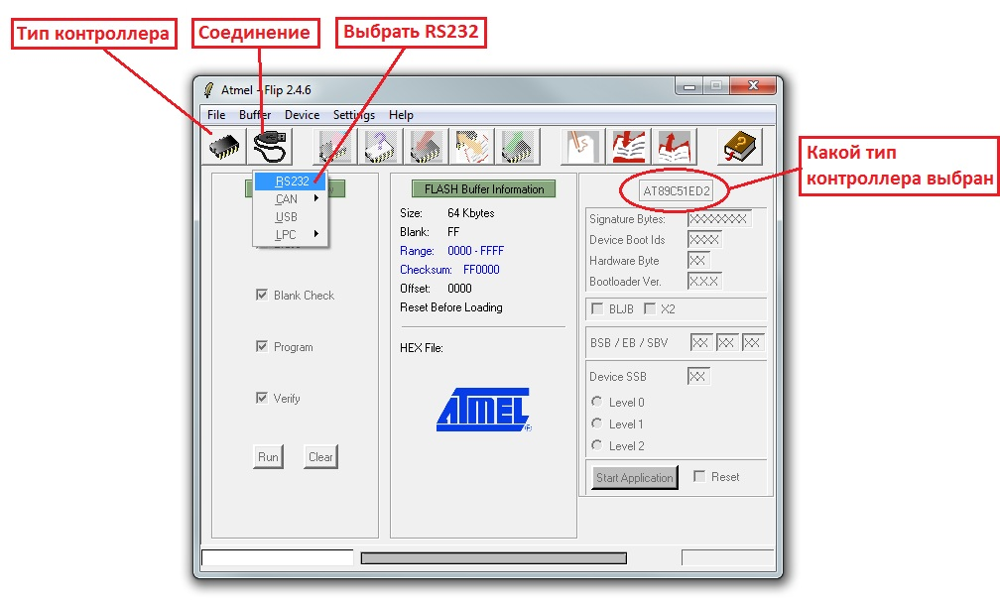
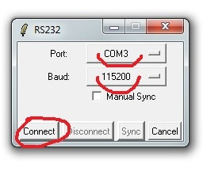
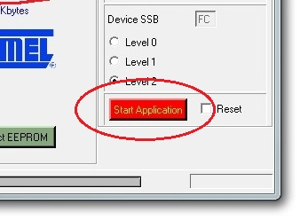
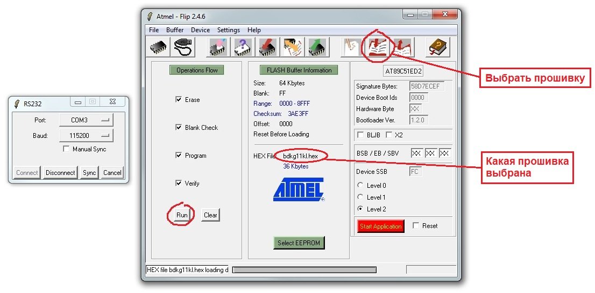
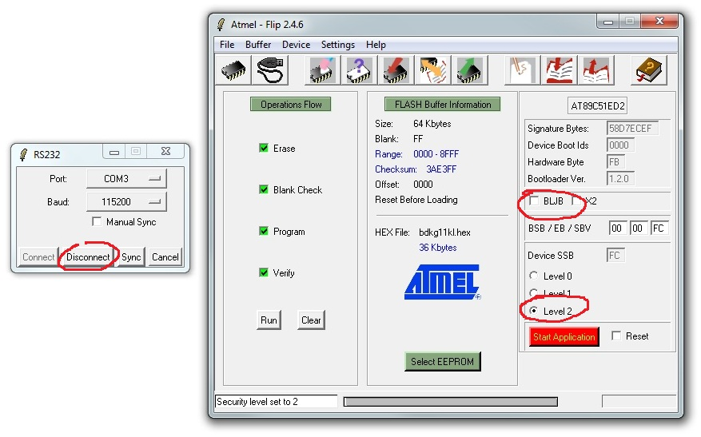
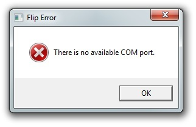
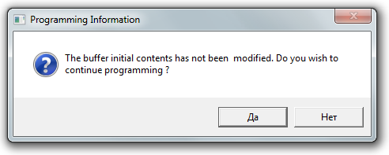

Flip. Как шить
- Запустить Flip
- Выбрать тип контроллера — AT89C51ED2 (как правило уже выбран), нажать соединение, выбрав RS232 
- Выбрать порт, скорость 115200, нажать "Connect" 
- Если кнопка загорелась красным — всё хорошо, устройство подключилось, можно шить 
- Выбрать прошивку, нажать "Run" 
- После окончания процесса прошивки снять флаг "BLJB", поставить "Level 2" 
- БД прошит. Нажать "Disconnect"
Если при попытке подключения выскакивает такое окно:

это значит, что в системе закончились свободные СОМ порты примерно до 40. Просто Flip не видит порты выше
этого значения. Надо звать админа, и просить почистить СОМ порты
Если выскочила такая ошибка:

ХЗ, что такое, единственно найденное 100% решение — перезагрузить комп и перепрошить, после перезагрузки
ошибка больше не появляется